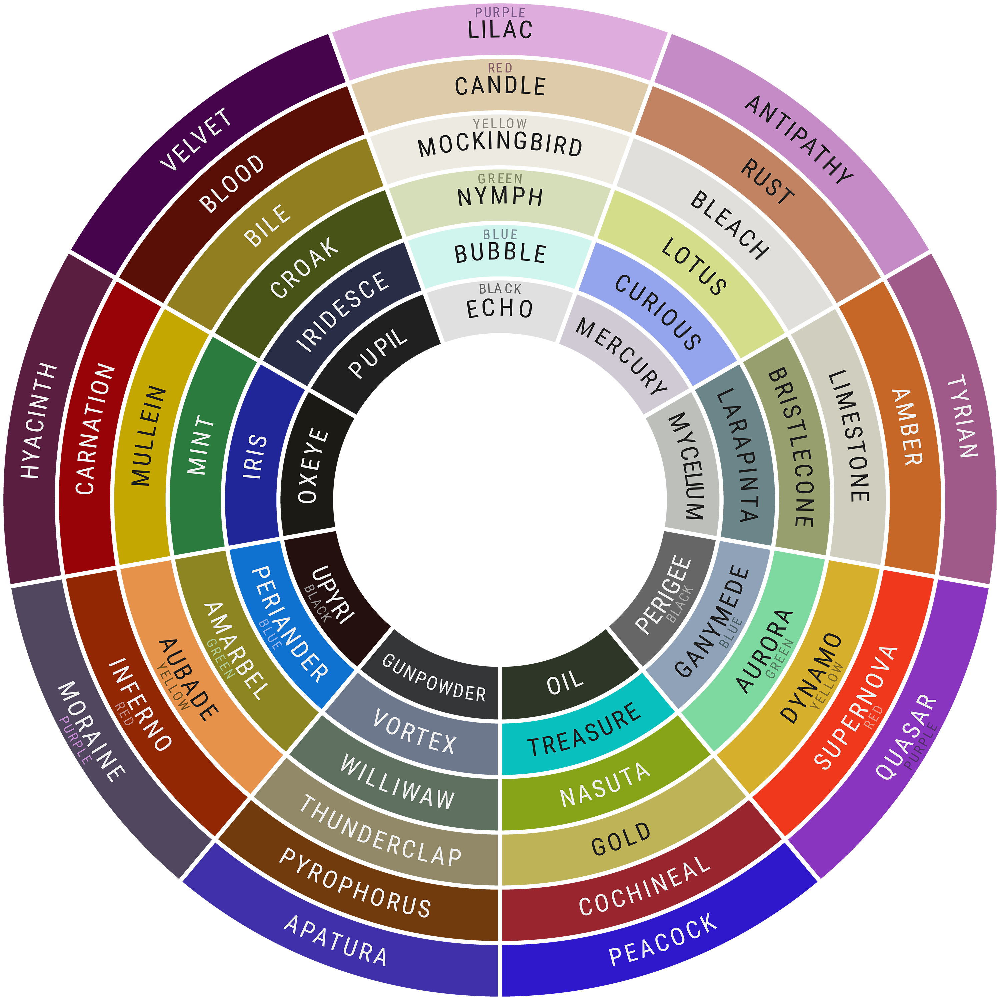

Seven Years Bad Luck
Chapter 3
July 8th, 2023

"It's time." They speak, clacking their teeth together with a certain finality.
After Rootsnarl and Chasm had been carried, injured and bleeding, into your city with the help of a few of your own, and the familiar cat demon from the Keepers' House, Magus, news was passed around like a good piece of prey. The other Keepers were in trouble after seeking out the Worldender– a cat whose true name is revealed to be Leandra– on her own turf– a domed city to the south named New Argos– and losing a fight they thought they could win.
For better or worse, each of you knew you'd have to travel there as well.
For some it's to rescue the Keepers, your only lifeline in these chaotic times. For others, it's the chance to face the Worldender and to put an end to all this bloodshed and death.
And for the rest, it's a bit of both.
You could kill two birds with one stone, after all.
So the plan was drawn up and passed around in ways that you all decided. Kyukusabi leapt in when the decisions had already been made, stating that they would lead you towards New Argos, while Magus stayed behind in the North City to ensure Rootsnarl and Chasm continued to heal.
That's why, just before the morning light passed over the land, they prodded you awake or grinned at you with their eyes glimmering just so. Their words pass over you, and settle on your shoulders.
It really was time.
All 113 of you, in small groups and pockets of your choosing, exit the city without fanfare. The wastes are as harsh and unforgiving now as they'd ever been. When the sun begins to rise, the light is dull, hidden behind thick cloud cover. But there's a smog, too, that curls around your throat and makes you want to cough. The scent of old death hits you suddenly, just before the edge of a forest.
It's late morning now, when old, deadened tree limbs are pushing through your fur. Kyukusabi trots at the head of the procession, waving their tail, and darting and weaving between cats as if to ensure that everyone knows where to go, and can see them leading them.
"Not much farther now!" It gekkers, and you wonder briefly why they'd laugh at a time like this. Though, it's easy to dismiss as just another strange trait of your patron demon.
The smog grows thicker and thicker still, until you can barely see a paw in front of your face.
Then it feels lighter, less heavy on your lungs. Pale, blue-silver mist threads through the smog, cutting it clean through and swirling up and around your nose. At least, you think it does, because you can't even see down the length of your own muzzle. You call out to those you were walking with– to friends, family, and acquaintances alike.
But there is no answer.
The trees tighten around you, squeezing you just enough to make walking uncomfortable. Sharp branches jut against you, but not enough to slice your flesh. All of the smog has now dissipated in favor of the strange mist, and you squint, wondering if this was another of Kyukusabi's tricks.
The fox doesn't seem to be anywhere around, though. There's no gekkering, no boasting, and certainly no flash of red fur sprinting through the fog.
There's only a chill running down your spine.
And the scent of rain.
01
This Chapter has a posting requirement! You must post at least 5 times during the course of the Chapter, or else your character will be killed and you'll be removed from the campaign. That said, there is no length requirement for posts!If you're unable to make the 5 posts required due to life reasons, please reach out to a Staff member ASAP!
Additionally if you make 10+ posts over the course of the entire Chapter, you'll be able to Level Up your character automatically at the start of the next Interim.
02
Every Team will have two Channels to themselves in the main server. There will be an OOC Channel for casual conversation and planning, and a Pings Channel for pinned Google Doc links and for Players to ping their team when they've posted.The only people with access to these Channels will be the team themselves, as well as the GM (Fox) and the Admins (Okibi & Narl). and any Mods assisting with that team's Checkpoints (Robyn & Sleepy). Make sure to heed the rules pinned in the OOC Channel!
03
Updates will come in the form of Checkpoints on each team's individual doc! Every character is allowed 2 actions per Checkpoint. Use them wisely! Staff Members will interpret your actions behind the scenes, and include the outcome in the following Checkpoint. Don't assume an action has an automatic effect unless specified by a Staff Member!04
If your Google Doc is getting laggy after a lot of posts have been made, you can ping Fox in your team's OOC Channel to get you a new one. A new Google Doc will automatically be given for any Google Doc exceeding 30 pages.05
Get involved and have fun! ❤ As always, if you need help, please feel free to reach out to a Staff Member and we'll do our best.RULES
- All TPE rules apply.
- Don't share active docs with anyone other than your teammates. Inactive Google Docs will be moved to the Archive, where they can be accessed at any time.
- Make sure your template meets the guidelines as described here.
- Please wait at least 2 posts or 24 hours after your's before posting again.
The Lost & The Fallen
The fates of these character vary, but for one reason or another they are no longer apart of your
fable.

DESDEMONA

HOUND

M'ATCHA

PHANTASM

SPECTRE
TEAM 01
- Anubis
- Duchess
- Girdy
- Grimoire
- Marble
- Princess
- Traveler
TEAM 02
- Atlas
- Lamb's Ear
- Marigold
- Olimar
- Ophelia
- Passerine
- Poppy (E)
TEAM 03
- Edevane
- Kitty
- Mallory
- Mantis
- Poppy (G)
- Requiem
- Ylva
TEAM 04
- Akuji
- Hansel
- Holiday
- Jackson
- Jet
- Vellichor
- Viridescent
TEAM 05
- Dul In Uth
- Junebug
- Ravindra
- Reverie
- Ridley
- Whitaker
- Yura
TEAM 06
- Alba
- Declan
- Gilde
- Journey
- Vega
- Yves
- Zenaida
TEAM 07
- Bela
- Elysian
- Emmett
- Labradorite
- Levana
- Rhiannon
- Riven
TEAM 08
- 27
- Brightly
- Ephraim
- Godfrey
- Hawke
- Helio
- Nautilus
TEAM 09
- Fig
- Pall
- Russell
- Selma
- Solivagant
- Ursa
- Vico
TEAM 10
- Alaska
- Clementine
- Friday
- Kassim
- Mephisto
- Muninn
- Sunshine
- Tempo
TEAM 11
- Archie
- Elio
- Eros
- Fallowmire
- Lesath
- Roost
- Vesper
TEAM 12
- Branwen
- Empress
- Glass
- Jesper
- Maverick II
- Phyllite
- Reaper
TEAM 13
- Allistor
- Disloyalty
- Milou
- Niremaan
- Rat
- Silhouette
- Ulysses
TEAM 14
- Jackie
- Javelin
- Nevermore
- Orca
- Raven
- Saoirse
- Wolfie
TEAM 15
- Edison
- Eurydice
- Kaleidoscope
- Linhardt
- Sarabia
- Tygra
- Wormwood
TEAM 16
- Amihan
- Forge
- Ghost
- Neo
- Nymphadora
- Seth
- Xenon
